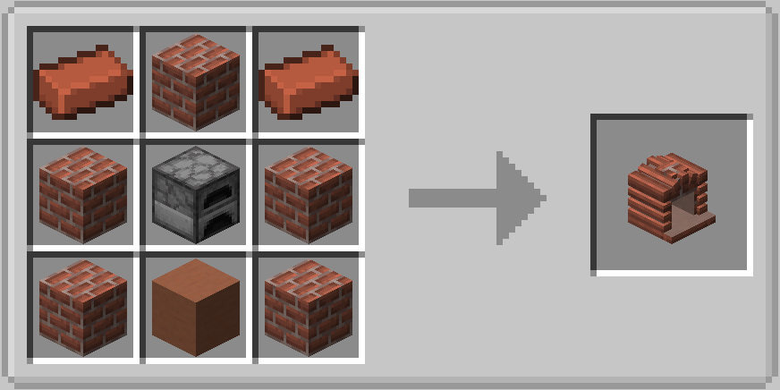

Let's get cooking! The Oven takes up to 9 ingredients and a container which may or may not be consumed by the recipe.
Usage
The Oven must be directly above a heat source to work (the flame icon must be lit). To use the Oven, insert ingredients into the 3x3 grid. Make sure to add something into the dish slot at the bottom!
Crafting

Added in
1.0
Used to make
(click to expand)
- Aioli
- Alfredo Pasta
- Apple Slaw
- Beet Mint Salad
- Butter
- Buttered Pasta
- Cactus Salad
- Candy Bar Salad
- Carrot Salad
- Chef Salad Feast
- Chicken Alfredo Pasta
- Chocolate Nut Butter Spread
- Citrus, Onion, and Mint Salad
- Coffee Jelly
- Cookie Doughs
- Cucumber Salad
- Dalgona Coffee
- Egg Mix
- Egg Salad
- Egg Whites Beaten to Stiff Peaks
- Eton Mess
- Fish Salad
- Frostings
- Furikake
- Gazpacho
- Grapefruit and Beetroot Salad
- Gummies
- Hot Wings
- Lemonade
- Limeade
- Liquid Blood Chocolate
- Liquid Dark Chocolate
- Liquid Milk Chocolate
- Liquid White Chocolate
- Marshmallow
- Mayo
- Melon Fruit Salad
- Melon Gazpacho
- Milkshakes
- Morkovcha
- Nougat
- Orangeade
- Pasta with Meatballs (from Farmer's Delight)
- Pasta with Mutton Chop (from Farmer's Delight)
- Potato Salad
- Pulled Pork
- Salami Mix
- Seaweed Salad
- Shirazi Salad
- Spaghetti Aglio e Olio
- Thai Melon Salad
- Tomato Pasta
- Wheat Dough (from Farmer's Delight)
- Whipped Cream
Bulk Bake, up to 9 at a time (click to expand)
- Baked Potato (from vanilla Minecraft)
- Beef Patty (from Farmer's Delight)
- Bread (from vanilla Minecraft, Farmer's Delight recipe from Wheat Dough)
- Cheese Soufflé
- Coffee Beans
- Cooked Bacon (from Farmer's Delight)
- Cooked Cactus Paddle
- Cooked Chicken (from vanilla Minecraft)
- Cooked Chicken Cuts (from Farmer's Delight)
- Cooked Cod (from vanilla Minecraft)
- Cooked Cod Slice
- Cooked Mutton (from vanilla Minecraft)
- Cooked Mutton Chops (from Farmer's Delight)
- Cooked Porkchop (from vanilla Minecraft)
- Cooked Rabbit
- Cooked Salmon
- Cooked Salmon Slice
- Fried Egg (from Farmer's Delight)
- Gingerbread Alex
- Gingerbread Creeper
- Gingerbread Diamond
- Gingerbread Emerald
- Gingerbread Pickaxe
- Gingerbread Steve
- Gingerbread Sword
- Gingerbread Villager
- Grilled Cheese
- Grilled Corn on the Cob
- Haggis
- Puffed Rice
- Roasted Apple
- Roasted Carrot
- Roasted Cocoa Beans
- Roasted Garlic
- Roasted Hazelnuts
- Roasted Peanuts
- Roasted Pumpkin Seeds
- Sausage Roll
- Smoked Ham
- Steak (from vanilla Minecraft)
- Sugar Cookie Alex
- Sugar Cookie Creeper
- Sugar Cookie Diamond
- Sugar Cookie Emerald
- Sugar Cookie Pickaxe
- Sugar Cookie Steve
- Sugar Cookie Sword
- Sugar Cookie Villager
- Toast